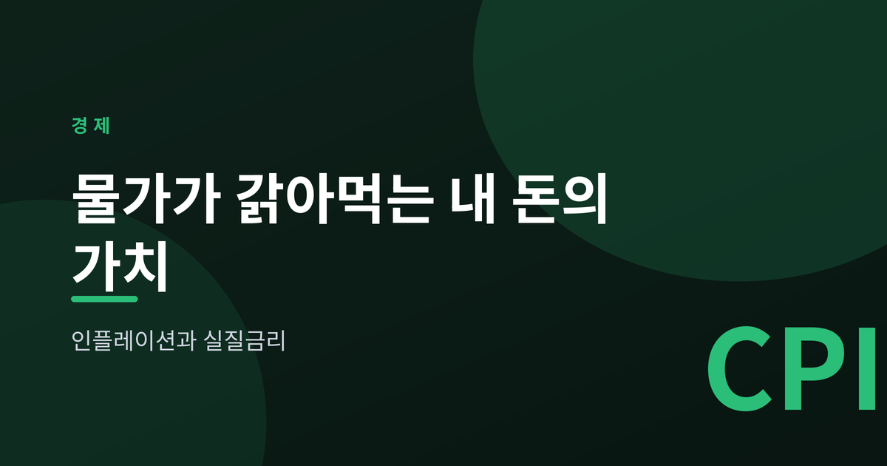
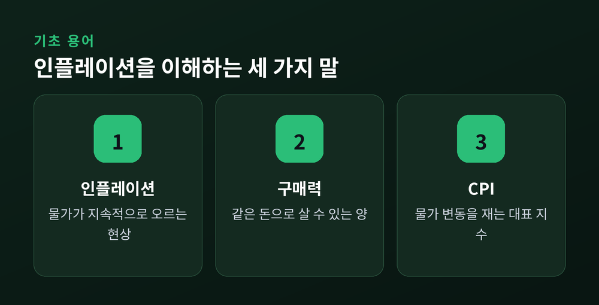
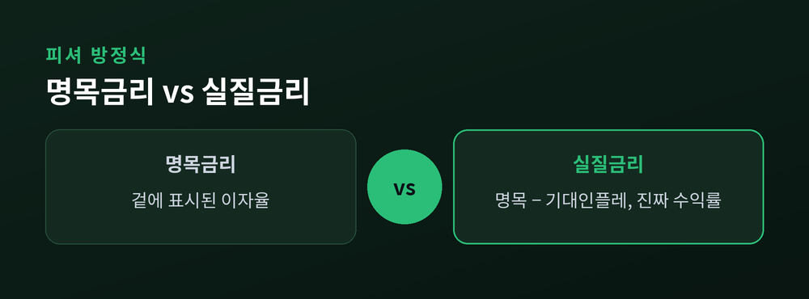
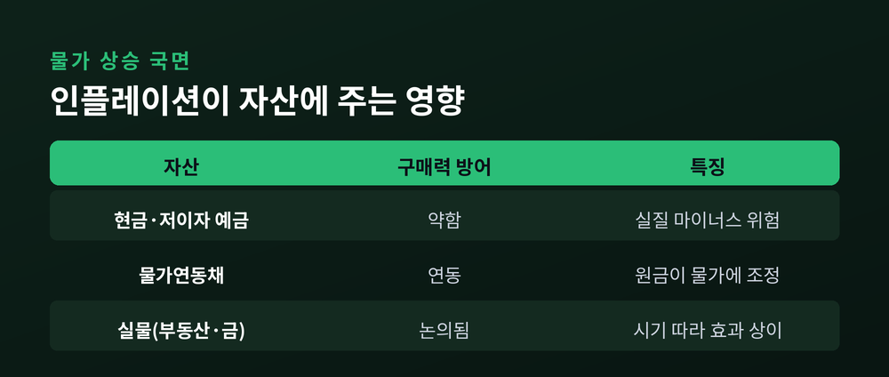

물가가 갉아먹는 내 돈의 가치

이번 글에서는 인플레이션과 실질금리를 정리해 보겠습니다. 통장 잔액은 그대로인데 살 수 있는 것이 줄어드는 이유, 그리고 "진짜 이자"가 무엇인지를 쉬운 말로 풀어보려 합니다. 기초 개념부터 차근차근 짚어보겠습니다.
인플레이션은 물가가 지속적으로 오르는 현상입니다. 한두 품목이 잠깐 오르는 것이 아니라, 전반적인 물가가 꾸준히 오르는 흐름을 뜻합니다.
물가가 오르면 같은 돈으로 살 수 있는 양이 줄어듭니다. 이것을 구매력이 떨어진다고 말합니다. 물가와 화폐 가치는 반대 방향으로 움직입니다.
그래서 지갑 속 금액이 그대로여도, 세상의 물건값이 오르면 내 돈의 힘은 조용히 약해집니다.

인플레이션을 숫자로 보여주는 대표 지표가 소비자물가지수, 곧 CPI입니다.
CPI는 사람들이 흔히 사는 상품과 서비스를 묶은 장바구니의 가격 변동을 측정합니다. 우리나라에서는 통계청이 이 지수를 작성해 발표합니다.
물가상승률은 보통 이 지수가 지난해 같은 달에 비해 얼마나 올랐는지로 계산합니다. 참고로 한국은행은 소비자물가 상승률 기준 2%를 물가안정목표로 두고 있습니다.
여기서부터가 핵심입니다. 겉에 표시된 이자율과, 물가를 걷어낸 진짜 이자율은 다릅니다.
명목금리는 눈에 보이는 이자율입니다. 예금 이율에 적힌 그 숫자입니다. 실질금리는 물가 상승분을 빼고 남는, 구매력 기준의 진짜 수익률입니다.
둘의 관계를 정리한 것이 피셔 방정식입니다.
실질금리 ≈ 명목금리 − 기대인플레이션
예를 들어 명목금리가 4%인데 기대되는 물가상승률이 3%라면, 실질금리는 약 1%입니다. 만약 물가상승률이 명목금리를 넘어서면 실질금리는 마이너스가 됩니다. 이자를 받고도 구매력은 오히려 줄어드는 셈입니다.

현금이나 이자가 아주 낮은 예금을 그대로 두었다고 해보겠습니다. 통장의 숫자는 변하지 않습니다.
하지만 그동안 물가가 올랐다면, 그 돈으로 살 수 있는 양은 줄어듭니다. 명목 수익이 물가상승을 따라가지 못하면 실질적으로는 손해입니다.
그래서 물가가 오를 때 구매력을 지키는 자산이 화제가 됩니다. 물가에 원금이 연동되는 물가연동채, 값이 물가와 함께 움직이는 경향이 있다고 논의되는 부동산이나 금 같은 실물 자산이 대표적으로 거론됩니다.
다만 어떤 자산도 늘 완벽하게 물가를 방어하지는 못합니다. 시기와 환경에 따라 효과가 달라지기에, 한 곳에 몰기보다 나눠 담는 방법이 흔히 이야기됩니다.
이 글은 특정 상품에 대한 투자 권유가 아니며, 교육 목적의 개념 정리입니다.

정리하면 이렇습니다. 물가는 오르고, 돈의 힘은 줄어듭니다. 그 사이를 메우는 개념이 바로 실질금리입니다.
— "이자를 받았다"가 아니라 "구매력이 늘었는가"를 물어야 진짜 손익이 보입니다.
내 돈의 가치를 지키는 첫걸음은, 명목이 아니라 실질을 보는 눈이라고 생각합니다.